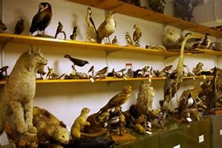
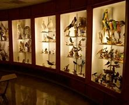

James Newman Clark Bird Museum

The James Newman Clark Bird Museum hosts a collection of over
500 species of bird native to the Wisconsin area. They were collected
over the course of many years, from the 1870s through the 1920s.
Notable birds in the collection are a bald eagle, a golden eagle,
as well as the now-extinct passenger pigeon. It is located on the
UWEC campus and is free to all patrons. Come check it out!
More History - UWEC.edu

Average Rating: